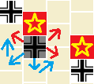
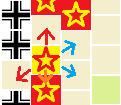

ゲーム概要
このゲームは第二次世界大戦中の1941年にナチス・ドイツ軍が行ったソ連への侵攻作戦、バルバロッサ作戦をテーマにしたゲームです。
AIはが存在しないため、ドイツ軍/ソ連軍の両陣営をプレイヤーが担当するソロプレイ専用ゲームとなっています。
PC専用です。(スマホでは操作性が非常に悪い)
1プレイ60分程度。
1.勝利条件
第250ターン終了時に、「ワルシャワ」「ミンスク」「キエフ」「レニングラード」「モスクワ」「スターリングラード」「マイコプ」のうち、より多く(つまり4つ以上)の都市を占領していた陣営の勝利です。
2.行軍
各ターン、マップ上の部隊の中からランダムに選ばれた1部隊が「行軍」か「攻撃」を行います。
「行軍」は隣接するマス(以下へクスと呼びます)へ移動します。
この際、敵部隊が存在するへクスへは進入できません。また、敵部隊が隣接するへクスから、敵部隊が隣接するへクスへ移動することはできません。

上の場合、黒のドイツ軍部隊は、右上・右下・左上のへクスへの移動は、「敵部隊が隣接するへクスから、敵部隊が隣接するへクスへの移動」に当たるため、行えません。
しかし、一度左下のへクスへ進み、そこから上のへクスへ進むことで、間接的に左上のへクスに進むことは可能です。
また、「海」と「湿地」へは進入することはできません。
3.攻撃
「攻撃」は隣接するへクスの敵部隊に対して攻撃を行います。
攻撃した際のダメージは以下の通りになります。
攻撃側戦力が防御側戦力の２倍以上の時（攻撃＞防御×２） 防御側２ダメージ
攻撃側戦力が防御側戦力を上回る時 （攻撃＞防御） 防御側１ダメージ
攻撃側戦力が防衛側戦力以下の時 （攻撃≦防御） 防御側１ダメージ 攻撃側１ダメージ
攻撃側戦力が防衛側戦力の２倍以下の時（攻撃≦防御×２） 防御側１ダメージ 攻撃側２ダメージ
なお防御側はボーナスとして、戦力が2多いものとして計算します。
例えば、戦力6の部隊で戦力5の部隊を攻撃した場合、防御側ボーナスにより攻撃側戦力が防衛側戦力以下になるので(5+2=7、7>6)、「攻撃側戦力が防衛側戦力以下の時」となり双方に1ダメージとなります。
4.退却
攻撃を受けた部隊は必ず「退却」か「死守」を行わなければなりません。
「退却」では、攻撃を受けた部隊が、1へクス移動します。ただし、退却で移動する場合は「敵部隊が隣接するへクス」へは進入することができません。

上の場合、ソ連軍は上・左下・下のへクスは「敵部隊が隣接するへクス」に当たるため退却移動を行えません。右上、右下のへクスは敵部隊が隣接していないため、退却移動が行えます。
「退却」を行えない、あるいは行わない場合は、「死守」を行います。「死守」を選択した場合、その部隊は2ダメージを追加で受けます。
5.行動回数
各部隊は、1ターンに以下の回数行動することが可能です。
ドイツ軍装甲部隊 ５
ソ連軍戦車・騎兵軍 ５
ドイツ軍歩兵部隊 ３
ソ連軍歩兵兵軍 １→２→３(イベントにより変化、6.イベントを参照)
ただし、攻撃を行うとそのターンの行動は終了となります。
例えばドイツ軍装甲部隊の場合、「4回移動して、1回攻撃する」「5回移動する」「3回移動して、1回攻撃する」などの行動をとれます。
6.イベント
ターン数に応じて、イベントが発生します。
ゲーム開始時 「ドイツ軍の奇襲」 ドイツ軍はソ連軍の2倍、そのターンの行動部隊に選ばれる確率が上がります。 (ゲーム上のイベントメッセージはありません)
第50ターン開始時 「ソ連軍の回復」 ドイツ軍の奇襲効果が終了し、ドイツ軍のイニシアティブ補正が無効になります。また、ソ連軍歩兵の移動力が2になります。
第100ターン開始時 「ソ連軍の増援」 ドイツ軍が占領していない都市において、ソ連歩兵軍が2部隊ずつ登場します(レニングラード、モスクワ、キエフ、ミンスクでは戦車軍も1部隊登場)。
第150ターン開始時 「ソ連軍の増援」 同上。
第200ターン開始時 「ソ連軍の増援」及び、「ソ連軍の冬季攻勢」 ソ連軍はドイツ軍の2倍、そのターンの行動部隊に選ばれる確率が上がります。また、ソ連軍歩兵の移動力が3になります。
第250ターン開始時 ゲーム終了。
7.操作
左下の選択肢は「1」「2」「3」「4」のキーで選択できます。
「Qキー」「Rキー」で攻撃部隊の選択、「Eキー」でキャンセル選択肢が選べます。
「強攻」「砲撃」「補充」のコマンドは使用しません。「補給物資」の概念も存在しません。
デザイナーズノート
・なぜマイコプが重要拠点なのか？
マイコプの南にはバグーが存在するため、バグーを守るためにソ連はマイコプを守る必要があります。
・なぜ行動する陣営、部隊がランダムなのか
これは戦闘における不確定性を再現しています。
戦闘においては、常に指揮官は一部の情報しか把握することができません。
我が部隊の士気は高い、と報告してくる部下は自信過剰かもしれませんし、敵部隊の能力は自軍諜報部隊の推測よりも高いかもしれません。
天気予報は当たらず、現地には地図に記載のない地形があったり、予想外の農民反乱に悩まされるかもしれません。
そうした指揮官が把握できない要素(戦場の霧)を再現する方法として、次行動できる部隊がどこか分からない、というシステムを採用しています。
より楽しみたい方へ
本作はボード・ウォーゲームの影響を強く受けています。
本ゲームからウォーゲームに関心を持っていただければ幸いです。
ウォーゲーム販売サイト１ ウォーゲーム販売サイト２
〈ゲームへ戻る〉